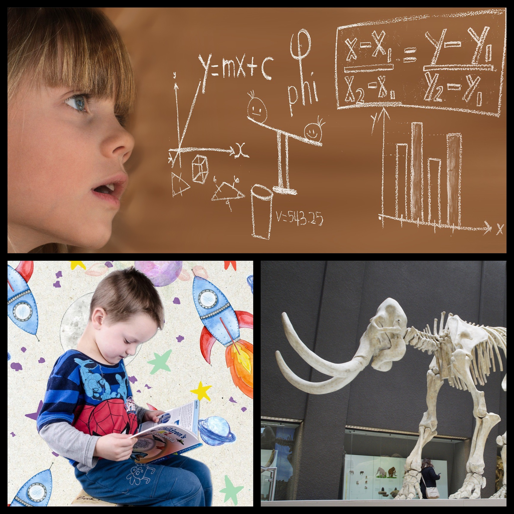

.jpg)
Explore Together
Come join us at the Community Science Museum where we're
committed to making science accessible to all.
Over the course of human history, science has developed from
our early understanding of fire, wind, water, and earth to
exploring everything from galaxies far away to the very building
blocks of life itself.
The aim of our museum is to create a space where everyone can
experience the wonders of our discoveries and perhaps even
ignite a lifelong passion to continue the exploration of the
world around us.
We believe science should not be confined to the textbook, but
brought to live through exhibits.
This is why we have over 1000 different exhibits on the many
varied subjects of science to explore. Many of these exhibits
are designed for you to interact with and play around to see
science come to life (apart from the dinosaur exhibits – they
only come to life at night when everyone’s gone home).
For kids
Are you a young person looking to learn more about science? Come
on down to our museum, there’s plenty to see and do.
You can learn about Newtonian physics from our bumper swing, or
why not travel back in time and meet our resident Woolly Mammoth?
Our exhibits are designed to be accessible for interested minds,
so make sure you come ready to learn and explore.
We also have the Young Stars club which meets once a week on a
Saturday between 10:00 and 13:00 where you’ll get to explore and
experiment with our team of experts.
During the school holidays we run special holiday clubs where you can join other children your age to go on a journey of discovery. Each holiday we pick a new theme to explore. To find out more about the holiday club and how you can join, send us a message.


For teachers
As a community-driven museum, we want to work with schools to create places of learning and exploring. Our team are on hand to give your students guided tours of the museum, teach them in our learning laboratory, and provide great video presentations that will excite and inspire them.
Please get in touch with us here to find out more about our facilities and to arrange a time to bring your students through for a visit.
Researchers
Are you looking to get involved with our team of researchers and academics? Our museum offers various ways for you to use our resources and contribute towards them. We have online records, laboratory space, and a working relationship with a number of universities around the country.


Visit Us:
The museum is located at Vitenskapsveien 120487 Oslo.
Admission
These tours are 70 NOK per person and include a handy printed guide of the museum.
Accessibility
The museum has wheelchair accessibility ramps. It also has audio guides and braille display signs for the visually impaired.
Food And Drinks
There is a café attached to the museum where you can get light lunches, soft drinks, coffee, snacks and more.
Shop
Our shop offers a range of memorabilia from the museum as well as great gifts and activity packs that allow you to continue to explore science even after you’ve left the museum.
Visiting Hours
Monday: Closed Tuesday: 10:00 – 16:00 Wednesday: 10:00 – 16:00 Thursday: 10:00 – 16:00 Friday: 10:00 – 19:00 Saturday: 9:00 – 16:00 Sunday: 9:00 – 13:00